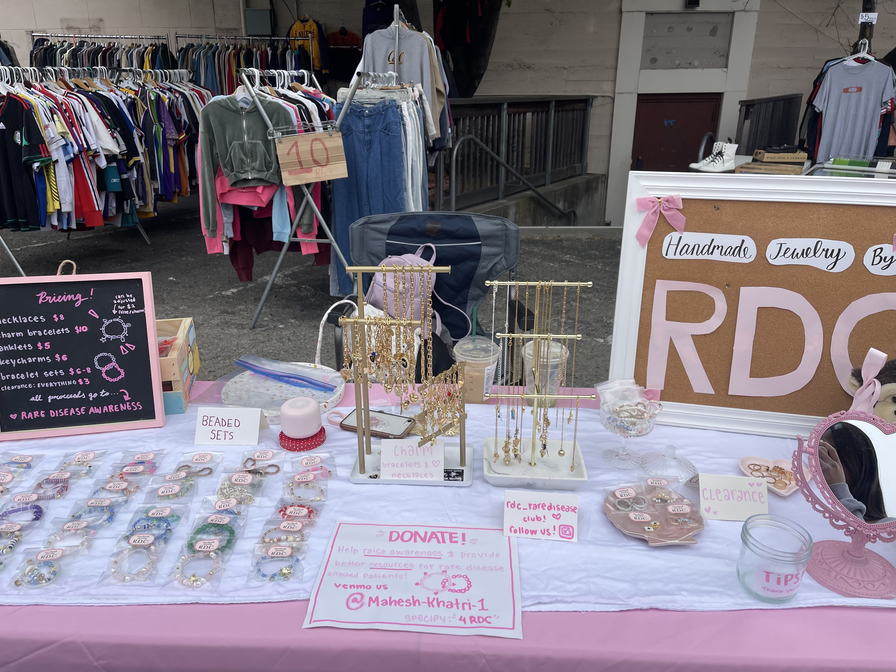

Our Passion for Jewelry

Rare Gems by Parnika K and Samhita R
Rare Gems Jewelry is the handcrafted jewelry branch of the Rare Disease Club, dedicated to turning creativity into impact. All proceeds from every piece sold are fully donated to rare disease organizations, patient support initiatives, and related research efforts. Our jewelry has also supported Mission 7K, helping provide financial assistance to a family with two children affected by a rare disease, specifically to support their medical expenses. Through Rare Gems Jewelry, we aim to combine art, purpose, and community—proving that even small creations can make a meaningful difference. Each piece is thoughtfully designed and handmade with high-quality materials, ensuring both beauty and durability. We sell our jewelry online on our Rare Gems website and at local markets throughout the Bay Area, bringing our mission directly to the community. Some of the markets we have participated in include flea and community markets such as the Soso Market, the San Jose Makers Market, and the Berkeley Farmers Market.
Follow Us
Tiktok ~ @rdc4617 & @raregem.designs